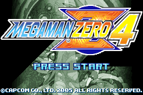

Megaman Zero 4 (USA)
EEPROM 64K
Cartridge Identity
- Game Code
B4ZE(FamilyB4Z)- Header Title
MEGAMANZERO4- Maker / Revision
08/ rev0- ROM Size
- 16.0 MiB (16,777,216 B)
- Save Media
EEPROM 64K- SHA-256
61c344754f25f8ec56531731718d9b60e561662bc86e8589f4426493cf42aaec- Engine / SDK Group
comm-021(12 families)
Screenshots

ROM Assets, Compression & Audio
- BIOS Compression
- LZ77 (
0x10): 137 streams · RLE (0x30): 0 streams - ROM Pointer Tables
- 200 tables (0 pointing to validated compressed streams)
- SDK Backup Tags
EEPROM_V124
Hardware MMIO Subsystems
ppu_display0x8000e24,0x80026d0,0x8002868,0x800291c
Regional Variants & Revisions (Family B4Z)
- Megaman Zero 4 (Europe) (
B4ZP, 16 MiB) - Megaman Zero 4 (Europe) (Virtual Console) (
B4ZP, 16 MiB) - Megaman Zero 4 (USA) (Virtual Console) (
B4ZE, 16 MiB) - Rockman Zero 4 (Japan) (
B4ZJ, 16 MiB) - Rockman Zero 4 (Japan) (Virtual Console) (
B4ZJ, 16 MiB)